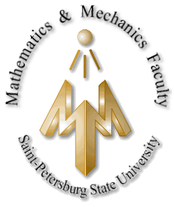

1989-1990

B.Sc. in Computer Science
St. Petersburg State University
Mathematics and Mechanics Faculty
Transferred to Technion
My computer science degrees focused on machine learning, computer vision, and signal processing, completed in parallel with industry work. Graduate studies and professional certifications in technology, software, and product management followed, along with sustained engagement with current methods through the doctoral research and ongoing course development.
1989-1990

St. Petersburg State University
Mathematics and Mechanics Faculty
Transferred to Technion
1991-1995
Technion, Israeli Institute of Technology
Faculty of Computer Science
Machine Learning
2001-2004
Faculty of Mathematics and Computer Science
Computer Vision
2005-2006
Israel Extension
Technology Management and Innovations
2008-2012

School of Computer Science
Machine Learning and Signal Processing, thesis
2012-2013
Faculty of Mathematics and Computer Science
Computer Vision and Machine Learning
2006
Project Management Institute
2006
Product Development and Management Association
2008

Institute of Electrical and Electronics Engineers
2018

Online Specialization Program
2019
Online Specialization Program
2024
Certification Program